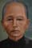
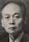
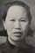
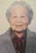

| 146,105,58,23 德 |
德芹 Āk Kĩn Déqín |
||||||||||||||||
|---|---|---|---|---|---|---|---|---|---|---|---|---|---|---|---|---|---|
| 147,106,59,24 業 |
緒業 Xuî Ngèp Xùyè |
隆業 (出繼) Lóngyè |
彰業 Jëng Ngèp Zhāngyè |
諒業 Lèng Ngèp Lìangyè |
 達業 Àt Ngèp Dáyè / née Wen |
周業 Jiü Ngèp Zhōuyè |
|||||||||||
| 148,107,60,25 光 |
慈光 Xũ Göng Cíguāng |
社維 Sêh Vĩ Shèwéi |
社杏 Sêh Hàng Shèxìng |
社思 Sêh Xü Shèsī |

 賀楊 Hào Yẽng Hèyáng Howard Young / Soong Ngan Lee |
藹光 Ōi Göng Ǎiguāng |
|||||||||||
| 149,108,61,26 前 |
宗華 Düng Vã Zōnghuá |
 榮景 Vẽin Gēin Róngjǐng Hinley Chen / Toy May Lee (d. 2008) |
|||||||||||||||
| 150,109,62,27 遠 |
英其 Yëin Kǐ Yīngqí Nick Chen/Betty Eng |
英傑 Yëin Gèik Yīngjié Paul Chen/Annie Lau |
|||||||||||||||
| 151,110,63,28 遵 |
Michael/Donna Reilly |
Jeffrey/Marlene Li |
Aimee/Jose Garriga |
Christopher/Catherine Lam | Scott/Patricia Rocco | Evan | |||||||||||
| 152,111,64,29 法 |
Grace(2001) |
Kyra (2004) |
Adrian(2010) |
Ryan(2015) |
Alex Garriga(2005) |
Ava Garriga(9/2008) |
Caylie(2014) Chrissy (2016) Carson(2018) |
||||||||||
榮景 Vẽin Gēin (Róngjǐng) owned a restaurant on West 80th Street between Broadway and Amsterdam in Manhattan.